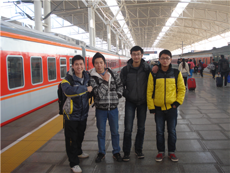

庐山游
2012年12月31日，劳打电话给我说问我要不要元旦去庐山，我想了下，天气有些冷，在这学校里还有些陌生，每天都在浑浑噩噩的过着，呆在寝室里无所事事，心中总是空荡荡的，感觉生活就像一个空罐子。有时会为了自己的颓废而感到焦虑，但自己有没有去做什么来改变这种局面。于是我答应了，出去走走，以填补生活的空罐子。
这个没有时间做心里准备的旅行就这样开始了。我往包里面放了件衣服，拿了相机，第二天早上与劳、帅、和陈出发了。
坐上出租车直达火车站，在火车站附近吃了点东西，他们都说吃饱了，但我觉得还不够，或许是我的胃口比较大，但我也没再吃什么，担心他们等我太久。于是拿上去九江的票，在车上，两边的景色飞快的向后飞去，伴随着淡淡的雾气，整个世界仿佛都没有睡醒。这是我的第一次真正意义上的花钱去旅行，去看只有在书上和电视上才出现过的庐山，心中满是期待。想象着李白“飞流直下三千尺”的瀑布，苏轼的“横看成岭侧成峰”的庐山，当初还不知道庐山还有日出和云海著名，所以那时我就是抱着看瀑布的心情去庐山的，1月1日，九江已经下雪了。
在九江火车站我们买了水和一些食物，我和劳负责带水，帅和陈负责带食物，我们这边显然是比较重的，但我们不介意，那时已经被上庐山的激动心情掩盖了。
在火车站我们找了辆车子载我们到庐山脚下，在那里买了门票，为了省钱，我们毅然做了一个惊人的决定（当初不觉得是惊人的）步行上山，后来知道那是24公里的上坡路。
上庐山小镇的路边满是积雪，我人生中第一次见雪也是那时候，心情很激动，于是边走边玩，把雪捧在手里，光着手捧也不觉得冷。山路崎岖，又有积雪，但我们还是干劲十足，我和劳率先走在前面，他们两个走在后面，不一会儿和劳就把他们两个抛在后面很远了，但后来他们两个走累了，在路上拦了辆车，舒适地上山了。